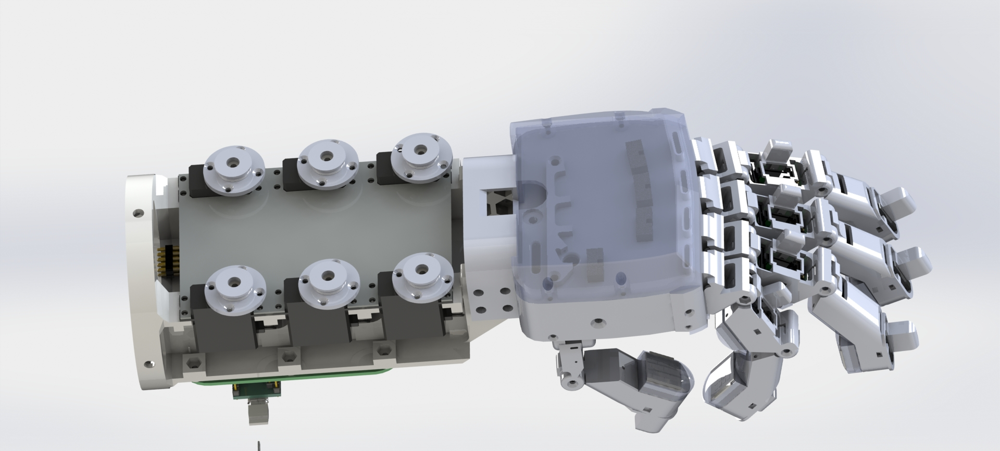
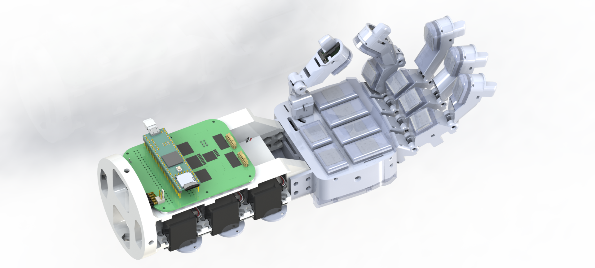

Zeyu Lu, Haotian Guo, David Carmona, Shounak Bhattacharya, Haoyong Yu
 
Abstract—Human hands can effectively perform daily activities, such as grasping and handovers of fragile objects, utilizing the tactile sensing capabilities which simultaneously perceive normal and shear forces via the mechanoreceptors highly integrated into the fingers and palm; here, human somatosensory systems leverage complex tactile feedback into patterns and identify the extrinsic contact states (ECSs) of objects in contact-rich tasks. Similarly, these features are still open issues and critical for robots in acquiring such human skills. In this letter, we integrate GTac sensors into a robotic hand, GTac-Hand, to obtain tactile feedback from its fingers and palm, resulting in 285 tactile measurements. Our results show that GTac-Hand can grasp delicate objects and precisely identify their ECSs via human-like patterning and learning models, which can be used for robots to perform challenging tasks, such as delicate object grasping, object handovers, and
ball-hit recognition.